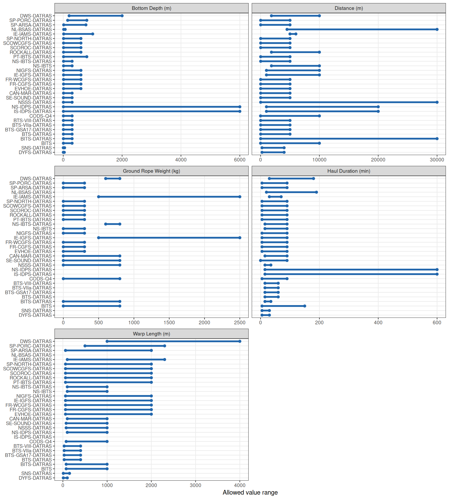

DATRAS_URL <- "https://datras.ices.dk/Data_products/ReportingFormat.aspx"
get_hidden_fields <- function(page) {
hid <- page |> html_elements("input[type='hidden']")
setNames(html_attr(hid, "value"), html_attr(hid, "name"))
}
post_form <- function(handle, hidden, survey_val, record_val) {
POST(
handle = handle,
path = "/Data_products/ReportingFormat.aspx",
encode = "form",
body = as.list(c(
hidden,
`__EVENTTARGET` = "",
`__EVENTARGUMENT` = "",
`ctl00$ContentPlaceHolder1$ddl_Datatype_new` = survey_val,
`ctl00$ContentPlaceHolder1$ddl_RecordTypes` = record_val,
`ctl00$ContentPlaceHolder1$BtnDisplay` = "Display"
))
) |> (\(r) read_html(content(r, "raw")))()
}
extract_field_table <- function(page) {
tbls <- page |> html_elements("table")
result <- NULL
for (tbl in tbls) {
candidate <- tryCatch(html_table(tbl), error = \(e) NULL)
if (!is.null(candidate) &&
nrow(candidate) > 3 &&
"FieldName" %in% names(candidate) &&
"Mandatory" %in% names(candidate)) {
result <- candidate
}
}
result
}
# --- Fetch initial page ---
h <- handle("https://datras.ices.dk")
r0 <- GET(handle = h, path = "/Data_products/ReportingFormat.aspx")
p0 <- read_html(content(r0, "raw"))
hidden0 <- get_hidden_fields(p0)
survey_opts <- p0 |>
html_elements("#ContentPlaceHolder1_ddl_Datatype_new option") |>
(\(x) data.frame(
survey_val = html_attr(x, "value"),
survey_name = html_text(x) |> trimws(),
stringsAsFactors = FALSE
))() |>
filter(survey_val != "none")
record_opts <- p0 |>
html_elements("#ContentPlaceHolder1_ddl_RecordTypes option") |>
(\(x) data.frame(
record_val = html_attr(x, "value"),
record_name = html_text(x) |> trimws(),
stringsAsFactors = FALSE
))()
# --- Scrape all combinations ---
scrape_one <- function(survey_val, survey_name, record_val, record_name) {
Sys.sleep(0.3)
page <- tryCatch(
post_form(h, hidden0, survey_val, record_val),
error = \(e) NULL
)
if (is.null(page)) return(NULL)
tbl <- extract_field_table(page)
if (is.null(tbl)) return(NULL)
tbl |>
select(Order, FieldName, Width, Format, Mandatory,
any_of(c("Min", "Max"))) |>
mutate(
Survey = survey_val,
SurveyName = survey_name,
RecordType = record_name,
Mandatory = Mandatory == "True",
.before = 1
)
}
combos <- crossing(survey_opts, record_opts)
results <- pmap(
list(combos$survey_val, combos$survey_name,
combos$record_val, combos$record_name),
scrape_one
)
rf <- bind_rows(results)DATRAS Exchange Format: Reporting Format
Field definitions, mandatory status, and survey-specific constraints across all 34 surveys
This page documents the DATRAS exchange format as reported by the DATRAS Reporting Format web page. It covers all 34 surveys and five record types (HH, HL, CA, LT, FA), and answers two questions:
- Which fields are mandatory vs. optional? — and does this vary across surveys?
- What are the allowed value ranges (Min / Max)? — and how do these vary across surveys?
The data are scraped directly from the DATRAS web page and are current as of the document build date.
1 Scraping the reporting format
2 Overview
| RecordType | Fields | Mandatory | Optional | Surveys |
|---|---|---|---|---|
| CA | 33 | 12 | 0 | 33 |
| FA | 21 | 11 | 0 | 33 |
| HH | 71 | 21 | 0 | 33 |
| HL | 27 | 12 | 0 | 33 |
| LT | 22 | 10 | 0 | 33 |
| Survey code | Full name |
|---|---|
| BITS | Baltic International Trawl Survey - before 2004 |
| BITS-DATRAS | Baltic International Trawl Survey |
| BTS-DATRAS | Beam Trawl Survey |
| BTS-GSA17-DATRAS | Beam Trawl Survey - SoleMon (Adriatic survey) - GSA17 |
| BTS-VIII-DATRAS | Beam Trawl Survey - Bay of Biscay (VIII) |
| BTS-VIIa-DATRAS | Beam Trawl Survey - Irish Sea (VIIa) |
| CAN-MAR-DATRAS | Canadian Maritimes trawl survey |
| CODS-Q4 | Cod Survey in Kattegat |
| DWS-DATRAS | Deepwater Surveys |
| DYFS-DATRAS | Inshore Beam Trawl Survey |
| EVHOE-DATRAS | French Southern Atlantic Bottom Trawl Survey |
| FR-CGFS-DATRAS | French Channel Ground Fish Survey |
| FR-WCGFS-DATRAS | French Western English Channel Ground Fish Survey |
| IE-IAMS-DATRAS | Irish Anglerfish and Megrim Survey |
| IE-IGFS-DATRAS | Irish Ground Fish Survey |
| IS-IDPS-DATRAS | Irminger Sea International Deep Pelagic Survey |
| LT-DATRAS | Litter data from DATRAS trawl surveys |
| NIGFS-DATRAS | Northern Ireland Ground Fish Survey |
| NL-BSAS-DATRAS | Netherlands Industry survey on Turbot and Brill |
| NS-IBTS | North Sea International Bottom Trawl Survey - before 2004 |
| NS-IBTS-DATRAS | North Sea International Bottom Trawl Survey |
| NS-IBTS_UNIFtest-DATRAS | Test of unified format of NS-IBTS |
| NS-IDPS-DATRAS | Norwegian Sea International Deep Pelagic Survey |
| NSSS-DATRAS | North Sea Sandeel Survey |
| PT-IBTS-DATRAS | Portuguese International Bottom Trawl Survey |
| ROCKALL-DATRAS | Scottish Rockall Survey - old (until 2010) |
| SCOROC-DATRAS | Scottish Rockall Survey - new (from 2011) |
| SCOWCGFS-DATRAS | Scottish West Coast Groundfish Survey (from 2011) |
| SE-SOUND-DATRAS | Sweden Sound Survey |
| SNS-DATRAS | Sole Net Survey |
| SP-ARSA-DATRAS | Spanish Gulf of Cadiz Bottom Trawl Survey |
| SP-NORTH-DATRAS | Spanish North Coast Bottom Trawl Survey |
| SP-PORC-DATRAS | Spanish Porcupine Bottom Trawl Survey |
Key findings from the scrape:
- Mandatory status is identical for every survey within a record type — the DATRAS exchange format does not vary field-level obligations by survey.
- Min / Max value ranges are defined for fields across all record types (HH, HL, CA, FA) and are likewise uniform across surveys — with the exception of five HH fields:
BottomDepth,Distance,GroundRopeWeight,HaulDuration, andWarpLength, whose allowed ranges differ by survey and are shown separately in Section 4.
3 Field definitions per record type
Each table shows the complete field list for that record type. Mandatory fields are highlighted. Min / Max are the allowed value ranges; blank cells indicate no constraint is specified on the page.
4 Survey-specific field constraints
All survey-specific variation in the reporting format is confined to allowed value ranges (Min / Max) for five HH fields. The plots below show each survey’s permitted range as a horizontal segment. Surveys are sorted by their minimum value within each field.
